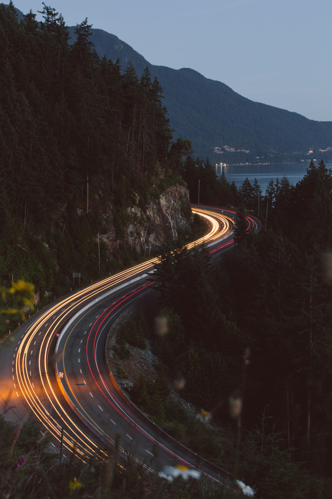

В этом проекте я впервые пробовала настроить Gulp и использовать
Sass. Выполнение проекта затянулось... все время хотелось писать код
по-старинке, отказаться от новых технологий, казалось зачем
усложнять, ведь сам по себе проект очень простой.
Новые знания требуют времени. Но как же круто, оказалось, собрать
проект с помощью GULP.
Мысли о проекте: Сложно не поддаваться старым привычкам.
</HTML>
В этом проекте было важно использовать новые знания в области:
градиентов (он украшает фон), анимации (svg-сердечко, ховер по кнопкам),
адаптива с минимальным использованием медиа-запросов.
Сложно не поддаваться старым привычкам. Но новые знания окрыляют.
Мысли о проекте: Углублять знания.
</HTML>

Пришлось и старые знания подтянуть, нырнуть глубже в уже известные
глубины и переосмыслить всё еще раз, задавая бессмертный вопрос -
"почему?"